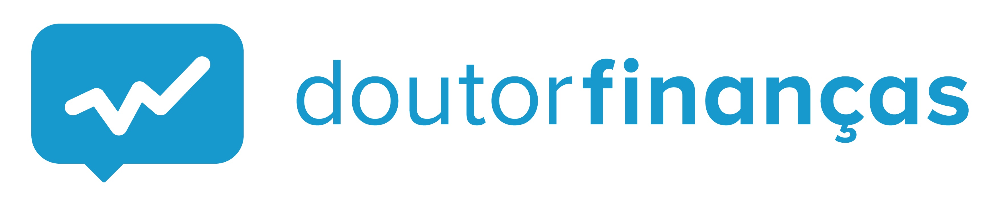
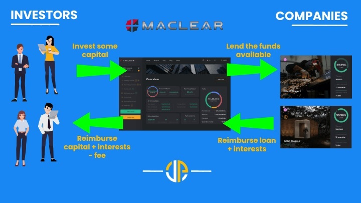
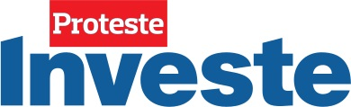
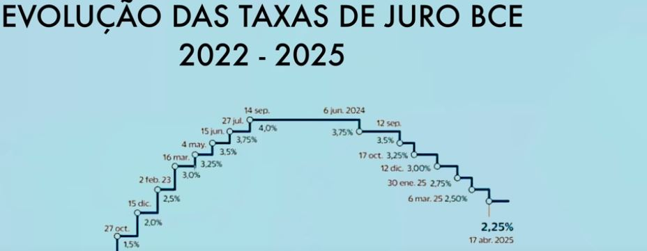

Comparação entre Produtos Financeiros: Segurança, Risco e Potencial de Retorno
Análise comparativa entre investimentos tradicionais como depósitos a prazo e certificados de aforro, face ao crowdlending e outras formas de P2P lending. Avaliação de risco, retorno e adequação ao investidor português.
Ler artigo completo
Contas Poupança: Podcast sobre Investimentos P2P
Podcast que explica o que são os investimentos P2P, os seus riscos e potenciais rendimentos, com linguagem simples e acessível.
Ler artigo | Ouvir episódio

Dr. Finanças: O que saber sobre P2P lending
Artigo introdutório que cobre os principais conceitos do peer-to-peer lending e o seu funcionamento em Portugal.
Ler artigo

Maclear: O que é Crowdlending?
Artigo da plataforma Maclear explicando o conceito de crowdlending e os seus benefícios para investidores e empresas.
Ler artigo

POD Poupar: Certificados de Aforro (Maio 2025)
Desde a comercialização da série F, os Certificados de Aforro tornaram-se pouco interessantes. As sucessivas descidas da taxa E3M ao longo de 2025 agravaram ainda mais esta situação. Será que é altura de olhar para alternativas de investimento, como o P2P, para melhorar os rendimentos?
Ler e ver artigo
Cor do Dinheiro (Pé de Meia): Certificados de Aforro - VOCÊ ESTÁ A PERDER DINHEIRO (Junho 2025)
A esta altura do campeonato, subscrever produtos de baixo risco, como certificados de aforro ou depósitos bancários, já não consegue cobrir a inflação. Será que os investimentos em P2P são a solução para quem procura melhores retornos com risco controlado?
Ver vídeo

8Lends: RWA vs Stocks: What Is Better for Making Money in 2025?
Os mercados de capitais apresentam um nível significativo de risco, inclusive na vertente da dívida, que em muitos aspectos pode ser superior ao risco inerente aos empréstimos P2P, os quais, apesar de também terem vantagens e desvantagens, normalmente contam com garantias reais, como colaterais (ABS).
Ver vídeo

Cor do Dinheiro (Pé de Meia): Depósitos a Prazo e Certificados de Aforro - Vão Descer Ainda Mais! O QUE FAZER (Junho 2025)
Não é novidade que as taxas dos depósitos a prazo e dos certificados de aforro estão em queda, mas tudo indica que vão descer mais...
Ver vídeo